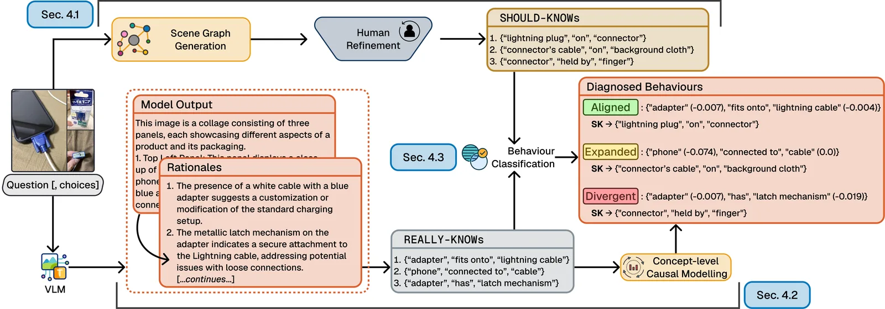
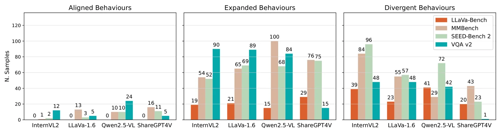
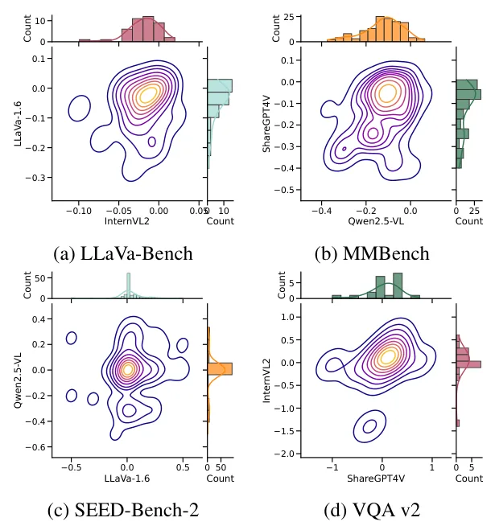

O problema: benchmarks medem desempenho, não comportamento
Modelos visão-linguagem (VLMs) combinam três componentes: um codificador visual (como o CLIP), uma camada de projeção intermediária e um modelo de linguagem decoder (como o Vicuna). Essa arquitetura tem funcionado bem em benchmarks offline e aplicações práticas, mas trabalhos recentes mostraram pontos cegos críticos na percepção visual e discrepâncias de desempenho em tarefas centradas em visão.
O desempenho agregado em benchmarks não conta a história completa. Um modelo pode acertar uma resposta por razões completamente diferentes das que um humano usaria. Pode ignorar detalhes visuais importantes e compensar com conhecimento linguístico. Ou pode organizar e priorizar conceitos de forma imprevisível. Benchmarks tradicionais medem acurácia, mas não verificam se o modelo exibe os comportamentos desejados e evita os indesejados.
Métodos de interpretabilidade existentes tentam preencher essa lacuna. Alguns são black-box (precisam apenas de acesso via API), outros são white-box (precisam de acesso completo ao modelo). Mas esses métodos geralmente dependem de proxies que não mapeiam naturalmente para cenários reais onde humanos usam VLMs. Falta uma forma sistemática de definir o que esperamos que o modelo faça e verificar se ele realmente faz isso.
A ideia: especificar comportamentos esperados e observados
DiaVLo (Diagnosing Behaviours of Vision-Language Models) propõe diagnosticar VLMs como uma adição ao benchmarking tradicional. A ideia central é construir duas especificações paralelas: uma de comportamentos esperados (SHOULD-KNOW, ou SK) e outra de comportamentos observados (REALLY-KNOW, ou RK). Comparando as duas, o framework identifica alinhamentos e desalinhamentos.
Os comportamentos esperados são definidos por representações simbólicas das entradas visuais, verificadas por humanos quanto à correção e relevância para a tarefa. Os comportamentos observados vêm de prompts que pedem ao próprio VLM para verbalizar as razões estruturadas por trás de suas respostas, produzindo auto-explicações de seu comportamento.
Além da comparação semântica, DiaVLo usa modelagem causal para quantificar a influência de conceitos visuais nas saídas do modelo e mitigar inconsistências nas auto-explicações. O framework gera comportamentos observados contrafactuais sinteticamente e estima efeitos no nível de conceitos usando um estimador Double Machine Learning.

Como funciona: grafos de cena e auto-reflexão
O pipeline do DiaVLo tem dois processos paralelos. No topo, a geração de comportamentos esperados começa com a criação automática de grafos de cena a partir das imagens. Um grafo de cena é uma representação estruturada da imagem em triplas (sujeito, relação, objeto) — por exemplo, ('vaso', 'está em', 'mesa'). Esses grafos candidatos são então refinados por humanos, que verificam se as triplas são corretas e relevantes para a pergunta ou tarefa em questão.
Na parte inferior do pipeline, o VLM é solicitado a gerar sua resposta e, crucialmente, a estruturar a justificativa por trás dela. O modelo produz triplas REALLY-KNOW que descrevem os conceitos e relações que ele afirma ter usado para chegar à resposta. Essas auto-explicações são então comparadas semanticamente com as triplas SHOULD-KNOW.
A comparação resulta em três categorias de comportamento. Comportamentos 'Alinhados' ocorrem quando uma tripla RK corresponde semanticamente a uma SK — o modelo usou conceitos esperados. Comportamentos 'Expandidos' aparecem quando o modelo menciona conceitos válidos que não estavam nas SKs, mas que são relevantes. Comportamentos 'Divergentes' surgem quando o modelo usa conceitos ou relações que não correspondem às expectativas humanas ou que são irrelevantes para a tarefa.
Para a verificação causal, DiaVLo gera variações contrafactuais das triplas RK e observa como as respostas do modelo mudam. Um estimador Double Machine Learning calcula o efeito causal de cada conceito na saída, permitindo identificar quais conceitos realmente influenciam o comportamento do modelo versus quais aparecem nas auto-explicações mas têm pouco impacto real.

Experimentos: quatro modelos, quatro benchmarks
Os autores testaram DiaVLo em quatro VLMs open-source: InternVL2 8B, LLaVa-1.6 7B, Qwen2.5-VL 7B e ShareGPT4V 7B. Todos têm cerca de 7-8 bilhões de parâmetros e representam arquiteturas populares na comunidade. Os modelos foram hospedados localmente em duas GPUs NVIDIA A10, usando parametrização padrão e decodificação greedy para reprodutibilidade.
Quatro datasets foram escolhidos para cobrir diferentes tipos de tarefa. LLaVa-Bench contém 60 perguntas abertas, diversas e desafiadoras — os autores esperavam que os modelos tivessem dificuldade aqui. MMBench forneceu perguntas de legendagem das classes 'Image Scene' (75 amostras) e 'Image Topic' (64), reformuladas como abertas. SEED-Bench 2 contribuiu com múltipla escolha de compreensão de cena (75) e raciocínio visual (75). VQA v2 trouxe perguntas de múltipla escolha sobre contagem de pessoas (75) e ações de pessoas (75).
Para a curação humana, foram recrutados 520 trabalhadores no Prolific, de países de língua inglesa, com taxa de aprovação ≥95%. O salário médio foi de 8 libras por hora. Cada anotador trabalhou em 5 amostras de dados, cobrindo um número variável de triplas SK candidatas. O estudo recebeu aprovação ética da instituição dos autores.
Resultados: três tipos de comportamento
A primeira pergunta de pesquisa foi: que tipos comuns de comportamento DiaVLo identifica? A resposta veio da classificação das triplas RK em Alinhadas, Expandidas e Divergentes, usando limiares de similaridade semântica. Os autores exploraram diferentes limiares e inspecionaram qualitativamente 200 amostras, cobrindo 952 triplas RK, para identificar padrões recorrentes.
Comportamentos claramente alinhados e claramente divergentes apareceram, como esperado. Mas o framework também revelou comportamentos mais nuançados. Os VLMs mostraram-se seletivos nos conceitos que usam, às vezes relacionando-os de forma diferente dos humanos. Em alguns casos, os modelos favoreceram descrições amplas em vez de aspectos composicionais das entradas visuais — por exemplo, mencionando 'sala de estar' em vez de detalhar objetos específicos e suas relações espaciais.
As distribuições de comportamentos variaram entre modelos e datasets. Alguns modelos apresentaram mais comportamentos Expandidos em certos benchmarks, sugerindo que vão além das expectativas humanas básicas mas de forma válida. Outros mostraram mais Divergências, indicando desalinhamento mais profundo entre o raciocínio do modelo e as especificações humanas.

Informatividade: comportamentos correlacionam com desempenho
A segunda pergunta foi: quão informativos são os comportamentos encontrados? Mesmo que um VLM tenha bom desempenho, não é garantido que os comportamentos que DiaVLo identifica se alinhem com esse desempenho. Os autores estudaram isso de duas formas.
Primeiro, calcularam quão bem as similaridades entre SK e RK descrevem o desempenho do modelo. Como não há razão para assumir relação linear entre essas variáveis, usaram Informação Mútua (MI) via bootstrap. Os resultados mostraram que as classificações de comportamento de DiaVLo carregam informação sobre o desempenho medido — ou seja, os comportamentos diagnosticados não são ortogonais à acurácia.
Segundo, fizeram comparações pareadas entre modelos através dos datasets, explorando as distribuições de efeitos causais no nível de conceitos. Para mitigar vieses, reportaram medianas de estimativas causais através de 100 divisões aleatórias dos dados. As distribuições revelaram que diferentes modelos atribuem pesos causais diferentes aos mesmos conceitos, e que a importância causal de conceitos varia entre tipos de tarefa.

O que os comportamentos revelam sobre VLMs
Os padrões encontrados sugerem que VLMs organizam e priorizam informação visual de formas que nem sempre correspondem à intuição humana. Um modelo pode acertar uma resposta mas por razões parcialmente divergentes das esperadas — usando conceitos corretos mas relações diferentes, ou focando em aspectos mais gerais da cena em vez de detalhes composicionais.
Os comportamentos Expandidos são particularmente interessantes. Eles indicam que o modelo identificou conceitos válidos e relevantes que humanos não especificaram explicitamente nas SKs. Isso pode ser positivo (o modelo captura nuances) ou problemático (o modelo se distrai com informação periférica). DiaVLo não resolve essa ambiguidade automaticamente, mas a torna visível para análise.
As estimativas causais adicionam uma camada de verificação. Nem tudo que o modelo menciona em suas auto-explicações tem efeito causal real na saída. Conceitos com baixo efeito causal mas alta frequência nas RKs podem indicar vieses de verbalização — o modelo 'acha' que deveria mencionar certos conceitos, mas eles não dirigem realmente seu comportamento.
Limitações: fidelidade, escala e estabilidade
Os autores são explícitos sobre as limitações. A primeira é a fidelidade das auto-explicações. DiaVLo depende de VLMs verbalizando suas razões, e adiciona verificação causal para mitigar inconsistências. Mas isso não é equivalente a garantir que as auto-explicações sejam fiéis aos mecanismos internos do modelo. Auto-explicações podem ser menos confiáveis que outros métodos de IA explicável em alguns casos, e são suscetíveis a vieses e correlações espúrias.
A segunda limitação é a dependência de curação humana. DiaVLo atualmente requer que humanos refinem as triplas SK candidatas para garantir relevância. Isso impõe limites de escalabilidade por dataset. Os autores sugerem que pipelines de crowdsourcing mais escaláveis poderiam usar fluxos Find-Fix-Verify: identificar automaticamente SKs problemáticas, rotear correções para VLMs ou humanos dependendo da severidade, e ter humanos verificando apenas um subconjunto. Mas isso exigiria balancear precisão e recall cuidadosamente.
A terceira limitação é a instabilidade no seguimento de instruções. Os VLMs testados lutaram com as perguntas nos datasets usados, às vezes retornando strings vazias. Isso aconteceu em diferentes datasets e com diferentes estratégias de decodificação (greedy, beam search, amostragem). Os modelos também tiveram dificuldade em seguir o template ao estruturar suas justificativas. Os autores suspeitam que isso seja subproduto dos dados de treinamento (predominantemente conversacionais) e do tamanho dos modelos.
Finalmente, o trabalho testou apenas modelos com cerca de 7-8 bilhões de parâmetros. Modelos maiores podem exibir comportamentos diferentes, potencialmente com auto-explicações mais estáveis e maior capacidade de seguir instruções estruturadas. Mas o custo computacional de hospedar e executar modelos maiores repetidamente para análise causal seria substancialmente maior.
Implicações para desenvolvimento e auditoria
DiaVLo não substitui benchmarks ou métodos de interpretabilidade — complementa ambos. Benchmarks continuam essenciais para medir desempenho agregado. Métodos de interpretabilidade white-box continuam necessários para entender mecanismos internos. Mas DiaVLo preenche um espaço intermediário: permite especificar comportamentos desejados em termos humanamente interpretáveis e verificar sistematicamente se modelos os exibem.
Para desenvolvedores de VLMs, o framework oferece uma forma de diagnosticar onde o comportamento do modelo diverge das expectativas, mesmo quando a acurácia é aceitável. Isso pode informar decisões sobre arquitetura, dados de treinamento e fine-tuning. Se um modelo consistentemente ignora relações espaciais composicionais em favor de categorias gerais de cena, isso sugere limitações específicas do codificador visual ou da camada de projeção.
Para auditoria e implantação responsável, DiaVLo fornece ferramentas para identificar comportamentos indesejados antes que causem problemas em produção. Se um modelo médico consistentemente usa conceitos Divergentes ao diagnosticar certas condições, isso é um sinal de alerta mesmo se a acurácia final parecer razoável. O framework torna esses desalinhamentos visíveis e quantificáveis.
O trabalho também aponta para direções futuras. Comportamentos no nível de sistema — como um VLM interage com ferramentas externas, como prioriza informação em diálogos multi-turno — poderiam ser diagnosticados com extensões de DiaVLo. E os insights sobre comportamentos poderiam informar técnicas de mitigação, como ajustar prompts, re-treinar componentes específicos ou adicionar camadas de verificação.
O que fica em aberto
DiaVLo demonstra que é possível diagnosticar comportamentos de VLMs de forma sistemática, mas muitas questões permanecem. A fidelidade das auto-explicações é uma limitação fundamental que o framework mitiga mas não resolve. Trabalhos futuros precisarão desenvolver métodos mais robustos para verificar se as razões verbalizadas correspondem aos mecanismos causais internos.
A escalabilidade da curação humana é outro desafio aberto. Os autores propõem caminhos usando crowdsourcing estruturado e VLMs como juízes, mas a implementação e validação dessas abordagens ficam para trabalho futuro. Há um trade-off fundamental entre precisão diagnóstica e custo de curação que cada aplicação precisará balancear.
Finalmente, o trabalho não testa modelos maiores ou mais recentes, e não explora como comportamentos mudam com fine-tuning ou adaptação de domínio. VLMs são uma tecnologia em rápida evolução, e frameworks de diagnóstico precisarão evoluir junto. Mas DiaVLo estabelece princípios e métodos que podem ser adaptados: especificar comportamentos esperados, extrair comportamentos observados, comparar semanticamente, e verificar causalmente.
O que fica
- DiaVLo diagnostica VLMs comparando comportamentos esperados (especificados por humanos via grafos de cena) com comportamentos observados (auto-explicações do modelo), identificando alinhamentos e divergências.
- Experimentos com quatro VLMs em quatro benchmarks revelaram que modelos podem acertar por razões diferentes das humanas, favorecendo descrições gerais sobre relações composicionais.
- Estimativas causais mostraram que nem todos os conceitos mencionados nas auto-explicações influenciam realmente as respostas, revelando vieses de verbalização dos modelos.
- Limitações incluem dependência de auto-explicações (cuja fidelidade não é garantida), necessidade de curação humana (limitando escala) e instabilidade no seguimento de instruções pelos modelos testados.
Paper original: DiaVLo: Diagnosing Behaviours of Vision-Language Models
Comentários
Nenhum comentário ainda. Seja o primeiro.